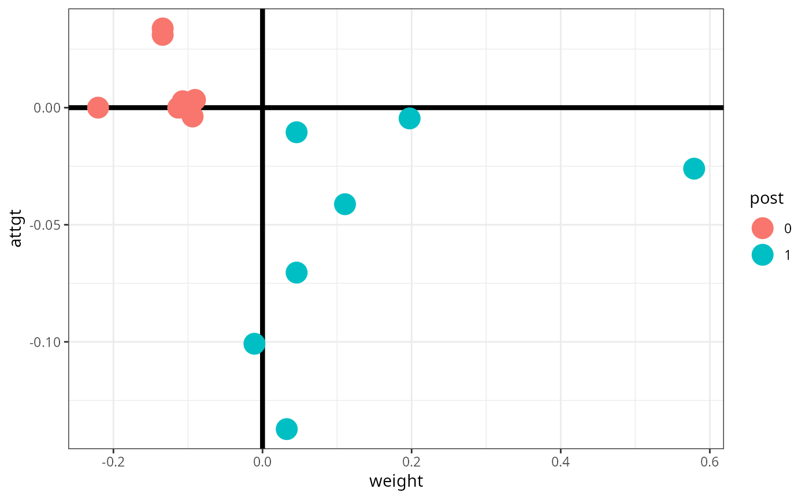

TWFE regression weights on group-time average treatment effects
Source:R/twfeweights.R
twfe_weights.RdComputes the weights that a two-way fixed effects (TWFE) regression of an outcome on a binary treatment indicator, unit fixed effects and time fixed effects places on each group-time average treatment effect, \(ATT(g,t)\), in a staggered treatment adoption design without covariates.
Usage
twfe_weights(
attgt_res,
keep_untreated = FALSE,
weightsname = attgt_res$DIDparams$weightsname
)Arguments
- attgt_res
The result of
did::att_gt(), estimated withcontrol_group = "nevertreated",base_period = "universal"and no covariates.- keep_untreated
Logical. If
TRUE, keep rows for the never-treated group (whose weights and \(ATT(g,t)\) are zero) in the results. Default isFALSE.- weightsname
Name of the column holding time-invariant sampling weights. Defaults to the
weightsnamepassed todid::att_gt(), so the weights match a TWFE regression estimated with the same sampling weights (e.g.,fixest::feols(..., weights = ~w)).NULLmeans unweighted.
Value
An object of class mp_weights_obj: a list with element
weights_df, a data.frame with one row per group-time cell and columns
group, time.period, weight (the TWFE weight), attgt (the estimated
\(ATT(g,t)\)) and post (a factor, 1 for post-treatment cells). Plot it
with ggtwfeweights().
Details
The TWFE coefficient on the treatment indicator equals
\(\sum_{g,t} w^{TWFE}(g,t) ATT(g,t)\), where the sum runs over all
treated groups and all time periods, including pre-treatment periods
(de Chaisemartin and D'Haultfoeuille, 2020; Goodman-Bacon, 2021). The
\(ATT(g,t)\) are those estimated by did::att_gt() with the
never-treated comparison group and a universal base period (the period
before each group is first treated). Weights on post-treatment cells sum
to one and can be negative; weights on pre-treatment cells are not zero,
so violations of parallel trends in pre-treatment periods feed into the
TWFE estimate.
For covariates in the TWFE regression, use implicit_twfe_weights().
References
Callaway, Brantly and Pedro H. C. Sant'Anna. "Difference-in-Differences with Multiple Time Periods." Journal of Econometrics 225.2 (2021). doi:10.1016/j.jeconom.2020.12.001
de Chaisemartin, Clement and Xavier D'Haultfoeuille. "Two-Way Fixed Effects Estimators with Heterogeneous Treatment Effects." American Economic Review 110.9 (2020). doi:10.1257/aer.20181169
Goodman-Bacon, Andrew. "Difference-in-Differences with Variation in Treatment Timing." Journal of Econometrics 225.2 (2021). doi:10.1016/j.jeconom.2021.03.014
See also
attO_weights() and att_simple_weights() for the weights behind
overall average treatment effect parameters.
Examples
data(mpdta, package = "did")
attgt <- did::att_gt(
yname = "lemp", tname = "year", idname = "countyreal",
gname = "first.treat", data = mpdta,
control_group = "nevertreated", base_period = "universal",
bstrap = FALSE, cband = FALSE
)
tw <- twfe_weights(attgt)
head(tw$weights_df)
#> group time.period weight attgt post
#> 1 2004 2003 -0.11307547 0.000000000 0
#> 2 2004 2004 0.04571981 -0.010503246 1
#> 3 2004 2005 0.04571981 -0.070423158 1
#> 4 2004 2006 0.03248687 -0.137258739 1
#> 5 2004 2007 -0.01085101 -0.100811363 1
#> 6 2006 2003 -0.09382154 -0.003769294 0
# the weighted sum of ATT(g,t) is the TWFE coefficient
sum(tw$weights_df$weight * tw$weights_df$attgt)
#> [1] -0.03654894
mpdta$D <- 1 * (mpdta$year >= mpdta$first.treat & mpdta$first.treat > 0)
coef(fixest::feols(lemp ~ D | countyreal + year, data = mpdta))
#> D
#> -0.03654894
ggtwfeweights(tw)
